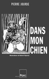
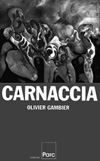
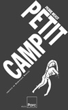
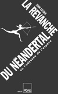
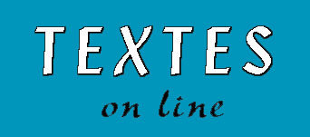

Livres éd. Parc
- Bibl. Paul Vermont - Textes on line
Livres
(Parc & Paul
Vermont)
Parc
Collection
Morsure
Récits et fables
de la violence contemporaine
Chaque vision du monde
découvre une mythologie nouvelle (Marcel Detienne). Le mythe,
peuplé des démences et des harmonies de
l'humanité, fait d'abord récit, raconte une histoire
ajustée à son époque, tout en cherchant, entre
l'ancien et le présent, une projection vers le devenir. Cette
fiction-là a ses exigences « mordantes », loin des
trop nombreux écrits narcissiques contemporains ! Peu ou prou,
les auteurs de la collection MORSURE, sont animés par
l'idée que le(ur) travail de la fiction participe de ce type
de récit, où résonne un épisode mythique
du monde d'aujourd'hui.
PochParc17 - Romans
Pierre Jourde (Dans mon chien)
Olivier Gambier (Carnaccia -
l'eschatologie bien tempérée)
Pierre
Mérot (Petit Camp)
John Gelder (La Revanche du
Néandertal ou l'odyssée de l'espèce)
---
collection
MORSURE
PIERRE JOURDE, Dans mon
chien
« Nul besoin de paroles, la
morsure suffira. En leur faisant découvrir la plaie, nous leur
apprendrons à s'ouvrir. Ils verront en
eux-mêmes... »
« Le voyeur dévoré devient visionnaire,
témoin à charge de notre monde. S'ouvrent de
vertigineuses perspectives ponctuées de passages à
l'acte où la tendresse le dispute à la cruauté,
le physique à la métaphysique, Eros à
Thanatos... »
OLIVIER GAMBIER, Carnaccia, une
eschatologie bien tempérée
« Aleph, plaie errante, se lie
à Baal, démon affaméé Par-delà
l'eschatologie et les sanies auxquelles Carnaccia prétend, il
y a la faim des mots : camisoles avides de chair, telle une oreille
en tourbillon, aspirant à eux tous les corps animés...
Carnaccia n'est autre que la dévoration de ce qui ne saurait
naître... »
PIERRE MéROT, Petit Camp (rites
déconcertants)
« En trois parties et cent
quatre-vingt-dix paragraphes numérotés, voici en effet
la description d'une communauté appelée à former
en rase campagne une Nouvelle Leipzig. Mais qui sont ces Garagistes
et ces Obsédés (bientôt
démultipliés en milliers de doubles) qui la fondent ?
[...] Un OVNI littéraire » (Dominique NOGUEZ)
JOHN GELDER, La Revanche du Néandertal (ou l'odyssée
de l'espèce)
« Du vieil oncle qui fait
désordre dans la famille à l'érection
armée, des fosses à morts du néolithique aux
charniers des S(apiens)s(apiens), de l'hermaphrodisme originel au
divan de Freud, de la force de frappe sélective à la
controverse des ADNoïdes... Mieux qu'une somme, une
mémorable odyssée ! »
Articles à lire :
La Force de l'attente
Antilla : lecture de A. Cadet-Petit
135X195 Romans
Gilles Sebhan (Haut Risque)
Tarik Noui (La
Désolation des singes)
Alain Defossé
(Dans la douceur du soir)
Vincent Colin (Lovepointnet)
 -
- -
- -
-
GILLES SEBHAN, Haut
Risque
Un ex-enfant terrible
tourmenté par le désir se retrouve professeur dans un
collège de banlieue. La rencontre avec un de ses
élèves va soudainement bouleverser l'ordre des choses
et plonger les protagonistes dans un univers extrême. Entre
grâce et disgrâce, l'auteur nous révèle un
univers ou réalité et fantasme s'allient jusqu'à
l'éclatant désastre.
TARIK NOUI, La Désolation des singes
« Je le garderai, ce
désir, je lui ferai un minaret blanc avec des colonnes
massives, percées jusqu'au nadir de la terre. Pour moi. Les
autres pas assez forts. Pour garder le désir, il faut
être plus fort que le désir des autres [...] »
Josu, prophète apocalytique malgré lui, Zarathoustra
pathétique du présent extrême, annonce la venue
du sur-objet. L'animalité du corps s'instille dans l'esprit de
la mécanique par une étonnante symbiose ; le «
malheur » aura fait « une collée entre nous et
l'espèce à venir... tenue par l'ingénierie d'une
nouvelle genèse. »
ALAIN DEFOSSé, Dans la douceur du soir
VINCENT COLIN, Lovepointnet.
Catalogue complet :
 Parc (édition)
Parc (édition)
Parc (Promotion Arts et Culture, association
1901)
14, rue émile Desvaux - 75019 Paris
Disponibles : 01 42 01 84 47 (R)
Catalogue Paul Vermont :
Paul
Vermont
mailto : parc.edition@gmail.fr
